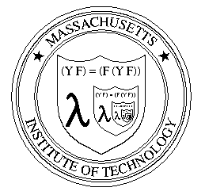

用 Scheme 的观点来看，Y 就是这样一个操作符，它作用于任何一个 (接受一个函数作为参数的) 函数 F，就会返回一个函数 X。再把 F 作用于这个函数 X，还是得到 X。所以 X 被叫做 F 的不动点(fixed point)。
所以我们常常见到 "(Y F) = (F (Y F))" 这种说法。比如在这里：

…… 为了防止误人子弟，你最好先找本 Lambda Calculus 的书来看 看。Lambda calculas 里的 Y Conbinator 要广泛的多。F 不一定只 接受一个函数作为参数。Fixed point 不但可以是函数，还可以是任 何 lambda term。
因为Scheme 是一种实际的语言，跟纯粹的理论还是有一定差距。如 果要完全实验 lambda calculas, 最好使用一些专用的 lambda 计算 器。比如：http://okmij.org/ftp/Computation/lambda-calc.html 就有多种语言实现的 lambda 计算器。
在 Scheme 里，通常 Y Combinator 是用来实现一些很 hack 的编程 技巧，用来定义“没有名字的递归”。
(define Y
(lambda (F)
(let ((W (lambda (x)
(F (lambda arg (apply (x x) arg))))))
(W W))))
看起来很像讲 lambda calculas 的书里的定义。
我们先定义一个函数 F*，它的不动点是一个 factorial 函数。
(define F*
(lambda (func-arg)
(lambda (n)
(if (zero? n)
1
(* n (func-arg (- n 1)))))))
然后运行：
((Y F*) 5)
得到 120. 再运行：
((F* (Y F*)) 5)
结果还是 120。这说明我们的定义正确。
Franco 教授的网页
http://www.ece.uc.edu/~franco/C511/html/Scheme/ycomb.html
叙述了这个 Y Combinator 的定义是怎样一步一步写出来的，非常启 发人的思维。看了这些推导，你可能就体会到当初 Fixed Point Theorem 是怎么想出来的。
不过他的定义有一个问题，那就是按照他原来的定义，不动点函数只 能接受一个参数。